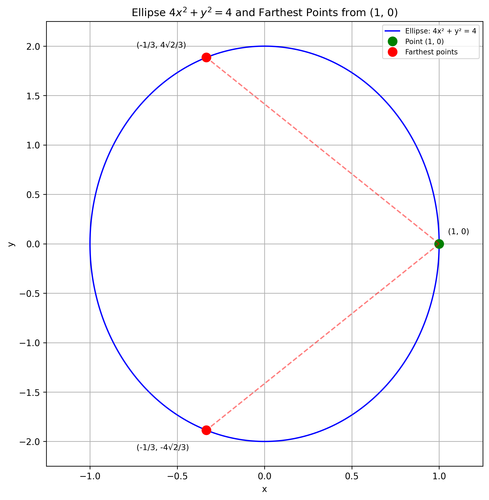

Find the points on the ellipse $4x^2 + y^2 = 4$ that are farthest away from the point $(1, 0)$.
Solution
Let's approach this step-by-step:
1) First, we need to set up the distance formula between a general point $(x, y)$ on the ellipse and the given point $(1, 0)$:
$d^2 = (x - 1)^2 + (y - 0)^2 = x^2 - 2x + 1 + y^2$
2) We want to maximize this distance. Since the square root function is monotonically increasing, maximizing $d^2$ will also maximize $d$.
3) We can use the method of Lagrange multipliers. Let's set up the Lagrangian:
$L(x, y, \lambda) = x^2 - 2x + 1 + y^2 + \lambda(4x^2 + y^2 - 4)$
4) Now, we take partial derivatives and set them equal to zero:
$$ \begin{aligned} \frac{\partial L}{\partial x} &= 2x - 2 + 8\lambda x = 0 \\ \frac{\partial L}{\partial y} &= 2y + 2\lambda y = 0 \\ \frac{\partial L}{\partial \lambda} &= 4x^2 + y^2 - 4 = 0 \end{aligned} $$
5) From the second equation, either $y = 0$ or $\lambda = -1$. Let's consider both cases:
Case 1: If $y = 0$, then from the third equation, $4x^2 = 4$, so $x = \pm 1$. But $x = 1$ is the point we're measuring from, so the farthest point in this case is $(-1, 0)$.
Case 2: If $\lambda = -1$, then from the first equation: $2x - 2 - 8x = 0$ $-6x = 2$ $x = -\frac{1}{3}$
Substituting this into the ellipse equation: $4(\frac{1}{9}) + y^2 = 4$ $y^2 = \frac{32}{9}$ $y = \pm \frac{4\sqrt{2}}{3}$
6) Therefore, the farthest points are $(-\frac{1}{3}, \frac{4\sqrt{2}}{3})$ and $(-\frac{1}{3}, -\frac{4\sqrt{2}}{3})$.
